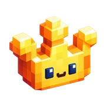

KCGTHE WORKSHOPPERSONAL WORLDS / VOL. 001INDEPENDENT MAKER ISTANBUL, TR
A little world
of things
I've made.
I'm Kerem. Somewhere between print,
code, and a very good cup of coffee.
01 — THE GOLDEN HOUR WORKSHOPSomewhere between a sketch and a working prototype.